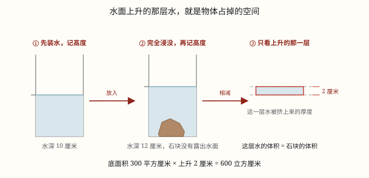

不规则物体的体积
没有公式也能量体积：把物体完全浸没在水里，水面上升的那部分水，正好等于物体占掉的空间。
| 所属主题 | 立体图形 |
|---|---|
| 所属模块 | 图形与几何 |
| 课标学段 | 第三学段（5~6年级） |
| 前置知识 | 体积和体积单位、长方体和正方体的体积公式 |
| 核心素养 | 量感空间观念推理意识 |
教材定位
人民教育出版社《2024年版》
对应五下第 4 单元「长方体和正方体」：不规则物体体积的测量（排水法）。
课标要求
| 图形与几何·图形的认识与测量 | 通过实例了解体积（或容积）的意义，知道体积（或容积）的度量单位，能进行单位之间的换算；体验不规则物体体积的测量方法。 印刷第 32 页 行为动词：了解 |
|---|
说明
长方体、正方体、圆柱有公式，量出长、宽、高就能算。可生活里更多的东西没有规则形状——一颗土豆、一块雨花石、一把钥匙、一团捏过的橡皮泥。它们的边是弯的，高是不齐的，公式套不上。但体积的意思是「占多大空间」，只要能把这个空间量出来，就不必知道它长什么样。
最常用的一招叫排水法。找一个底面是长方形（或正方形）的透明容器，倒入适量的水，记下水面高度；把物体完全浸没水中，再记一次水面高度。水面一定会上升——因为物体挤占了原本属于水的那块空间，水只能往上让位。
上升的那部分水，形状是一个柱体：底面和容器底面一样大，高就是两次读数的差。它的体积 = 底面积 × 上升的高度，所以 V_\text物 = S_\text底 × (h_\text后 - h_\text前)。看图 1：底面积 300 平方厘米、水面上升 2 厘米，物体就是 600 立方厘米。
有两个前提，缺一不可。一是不吸水：砖块、海绵、粉笔放进水里会吸走一部分，水面升得不够，算出来偏小，可以先把它们泡透，或者裹一层薄蜡。二是完全浸没：露在水面上的那部分没有排开水，量出来的只是浸在水里那一部分的体积；浮起来的木块，要用细针按下去，或者绑个小螺母坠着。
如果容器太浅、水面会溢出来，就换一个思路：把容器装满水，放入物体，用盆接住溢出来的水，量一量溢出多少毫升——溢出的水就是物体挤出来的水，体积同样等于物体的体积。这条叫溢水法，和排水法是一回事，只是一个量「涨了多少」，一个量「流走多少」。
使用场景
科学课的测量：测一块石头的体积，没有公式可用，一只量杯加一把尺子就够。
厨房里的估算：一坨面团、一块冻肉有多大，泡进量杯里就能读出来，不用先把它切成方块。
工程与建材：工地收进形状不规整的石料，用车斗量不方便时，可以用水槽按排水法核算方量。
生活里的鉴别：一枚戒指、一把铜锁是不是实心的，量出体积再和重量一比，就知道里面有没有空心。
注意点
底面积要用容器的内底面积。玻璃杯有厚度，量外面算出来偏大；物体的底面积更不能用，它和容器底面根本不一样大。
读的是两次水面的差，不是后来的那个数。水深从 10 厘米升到 12 厘米，上升的是 2 厘米，不是 12 厘米。
物体必须完全浸没。露出一角，那一角就没排水，量出来偏小；用细针按下去，或者绑个小重物坠着。
吸水的物体不能直接泡。砖、木块、海绵会吸走一部分水，水面升得不够，结果偏小；先泡透、裹蜡，或者改用埋沙法。
容器要够大、水别溢出。水一溢出，上升的高度就测不准；这种情况改用溢水法，量流出来的那部分水。
为什么是这样

图 1：石头占掉的空间，正好被水让出来，成了水面上那一薄层
算理推导
先想清楚体积是什么：物体占空间的大小。它和形状无关——同一块橡皮泥，捏成球、捏成方块、捏成小动物，占的地方一样大。
水是一把「会流动的尺子」。它没有固定形状，倒进什么容器就变成什么形状，所以水的体积很好算：容器底面积 × 水深。
把物体放进水里，物体要占地方，可水里已经没有空位了，只好把同样多的水挤到上面去。物体占掉多少空间，就有多少水被挤上去。
被挤上去的那部分水，正好铺满容器的底面，厚度就是水面上升的高度。它是一个标准的柱体，体积 = 底面积 × 上升高度。
这部分水的体积，就是物体浸在水里那部分的体积。完全浸没时，浸在水里的就是整个物体，所以量出的水正好等于物体的体积——这就是图 1 右边那一薄层的意义。
动手实验
找一个底面是长方形的透明保鲜盒，量出里面的长和宽，算出底面积。倒入水，用尺子量出水深并记下。把一颗土豆放进去，用筷子按到完全浸没，再量一次水深。两次相减、乘底面积，就是土豆的体积。然后把土豆切成几块再放回去量一次，水面升高的高度一模一样——切碎了，体积没变。再拿一块砖头试：直接放进去，升高的高度比预想的少，因为砖吸水了；先把砖在水里泡透再量，结果就对上了。
按场景的例题
例 1（场景：自然现象） 一块雨花石有多大
一个长方体水槽，从里面量长 20 厘米、宽 15 厘米，水深 10 厘米。放入一块雨花石并完全浸没后，水深变成 12 厘米。这块石头的体积是多少？
解：底面积 20 × 15 = 300 平方厘米；水面上升 12 - 10 = 2 厘米；体积 300 × 2 = 600 立方厘米。
答：600 立方厘米。
例 2（场景：计量与估算） 用量杯读土豆的体积
一个量杯里原来有水 300 毫升，放入一个土豆并完全浸没后，水面升到 380 毫升。这个土豆的体积是多少立方厘米？
解：水面上升 380 - 300 = 80 毫升，也就是 80 立方厘米。1 毫升 = 1 立方厘米，杯上有刻度，就不用再乘底面积。
答：80 立方厘米。
例 3（场景：工程建造） 工地上核算石料方量
工地有一个长方体水槽，从里面量底面长 60 厘米、宽 40 厘米。把一块不规则石料完全浸没，水面上升 5 厘米。这块石料有多少立方分米？
解：底面积 60 × 40 = 2400 平方厘米；体积 2400 × 5 = 12000 立方厘米；12000 ÷ 1000 = 12 立方分米。
答：12000 立方厘米，也就是 12 立方分米。
例 4（场景：校园生活） 科学小组用溢水法量石块
小组把一只装满水的水桶放在空盆里，把一块石块轻轻放进去，桶里溢出的水正好 150 毫升。石块的体积是多少？如果把这些水倒进底面积 30 平方厘米的量筒，水面会有多高？
解：溢出的水就是石块挤出来的水，体积相等：150 毫升 = 150 立方厘米。倒进量筒后，高 = 150 ÷ 30 = 5 厘米。
答：体积 150 立方厘米，量筒里水面高 5 厘米。
常用推论
排水法：V_\text物 = S_\text底 × (h_\text后 - h_\text前)；反过来，水面上升的高度 = V_\text物 ÷ S_\text底。
物体只有一部分浸在水里时，量出来的是浸在水里那部分的体积，不是整个物体的体积。
同一个物体不管捏成什么形状，排水量都一样——体积和形状无关。
用有刻度的量杯时可以直接读毫升：1 毫升 = 1 立方厘米，两次读数相减就是物体的体积。
易错点
错石块放进水里，有一角露在水面上，仍把水面上升的那部分全部算成石块的体积。
为什么错露出水面的那一角没有排开水，水面上涨只反映了浸在水里那部分的体积，所以算出来偏小。
正确用细针把石块按到完全浸没再读数，量出来的才是整块石头的体积。
错玻璃杯外面量得底面长 8 厘米、宽 5 厘米，就用 8 × 5 = 40 平方厘米当底面积。
为什么错玻璃有厚度，外底面比内底面大，底面积一大，算出的体积就偏大。
正确从杯子里面量，内底面长 7 厘米、宽 4 厘米，底面积 28 平方厘米，再用 28 乘上升高度。
错水深从 10 厘米升到 12 厘米，算成 300 × 12 = 3600 立方厘米。
为什么错12 厘米是放入物体后的总水深，不是水面上升的高度。物体只占用了上升的这 2 厘米。
正确300 × (12 - 10) = 600 立方厘米。
错把一块砖直接放进水里量体积。
为什么错砖会吸水，一部分水跑到砖的内部去了，水面升得不够，量出来偏小。
正确先把砖泡透再量，或者裹一层薄蜡；也可以用埋沙法，看沙面升高多少。
直观理解
洗澡时坐进浴缸，水位立刻升高；人越大，水升得越高。排水法就是把这件天天发生的小事搬到桌面上量一量——水升高的那一段，正好是「你占的地方」。
形状不规没法算，放进水里就看穿；底面积乘上升数，水涨多少它多大。